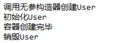
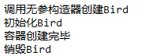
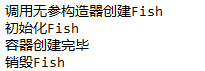
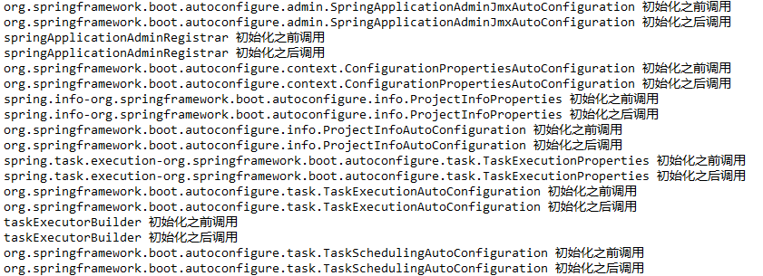
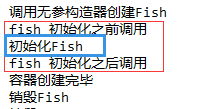

所谓Spring Bean的生命周期指的是Bean从创建到初始化再到销毁的过程，这个过程由IOC容器管理。一个完整的Bean生命周期可以参考Spring Bean生命周期。这里我们主要记录一些和Bean生命周期相关的细节。
Bean的初始化和销毁
在整个生命周期过程中，我们可以自定义Bean的初始化和销毁钩子函数，当Bean的生命周期到达相应的阶段的时候，Spring会调用我们自定义的Bean的初始化和销毁方法。自定义Bean初始化和销毁方法有多种方式，下面逐一介绍。
@Bean
上一节中介绍了可以在配置类中通过@Bean注解来注册Bean，我们也可以通过它来指定Bean的初始化和方法。
为了演示，我们新建一个Spring Boot项目，然后创建一个User类：
1 | public class User { |
然后在配置类里注册该组件，并指定初始化和销毁方法：
1 |
|
其中initMethod = "init"和destroyMethod = "destory"与User类里的init，destory方法相对应。
在Spring Boot入口类中测试:
1 | // 返回 IOC 容器，使用注解配置，传入配置类 |
启动项目，观察控制台输出:

从上面的输出我们看出在容器启动之前，先调用对象的无参构造器创建对象，然后调用初始化方法，在容器关闭的时候调用销毁方法。
上面的情况是对于单例而言的，如果组件是多例模式又是什么情况呢？我们把上面的组件注册配置改为多例，然后再次启动项目，观察控制台输出:

控制台的输出和我们上节讨论的一致，即在多例模式下，IOC容器启动的时候并不会去创建对象，而是在每次获取的时候才会去调用方法创建对象，创建完对象后再调用初始化方法。但在容器关闭后，Spring并没有调用相应的销毁方法，这是因为在多例模式下，容器不会管理这个组件（只负责在你需要的时候创建这个组件），所以容器在关闭的时候并不会调用相应的销毁方法。
InitializingBean&DisposableBean
除了上面这种方式指定初始化和销毁方法外，Spring还为我们提供了和初始化，销毁相对应的接口：
InitializingBean接口包含一个afterPropertiesSet方法，我们可以通过实现该接口，然后在这个方法中编写初始化逻辑。DisposableBean接口包含一个destory方法，我们可以通过实现该接口，然后再这个方法中编写销毁逻辑。
新建一个类，名称为Bird，然后实现这两个接口：
1 | public class Bird implements InitializingBean, DisposableBean { |
在配置类中注册这个组件:
1 |
|
测试一波：
1 | AnnotationConfigApplicationContext context = new AnnotationConfigApplicationContext(WebConfig.class); |
启动项目，观察控制台输出:

@PostConstruct&@PreDestroy
除了上面两种指定初始化和销毁方法的方式外，我们还可以使用@PostConstruct和@PreDestroy注解修饰方法来指定相应的初始化和销毁方法。
新建一个类，名称为Fish：
1 | public class Fish { |
在配置类中注册这个组件:
1 |
|
测试一波：
1 | AnnotationConfigApplicationContext context = new AnnotationConfigApplicationContext(WebConfig.class); |
启动项目，观察控制台输出:

效果和上面两种方式一致。
这两个注解并非Spring提供，而是JSR250规范提供。
BeanPostProcessor
Spring提供了一个BeanPostProcessor接口，俗称Bean后置通知处理器，它提供了两个方法postProcessBeforeInitialization和postProcessAfterInitialization。其中postProcessBeforeInitialization在组件的初始化方法调用之前执行，postProcessAfterInitialization在组件的初始化方法调用之后执行。它们都包含两个入参：
bean：当前组件对象；
beanName：当前组件在容器中的名称。
两个方法都返回一个Object类型，我们可以直接返回当前组件对象，或者包装后返回。
我们来定义一个BeanPostProcessor接口的实现类MyBeanPostProcessor：
1 | public class MyBeanPostProcessor implements BeanPostProcessor { |
在配置类中注册该组件:
1 |
|
再次启动项目，观察控制台输出:


可以看到，BeanPostProcessor对IOC容器中所有组件都生效。
源码链接：https://github.com/wuyouzhuguli/SpringAll/tree/master/51.Spring-Bean-Lifecycle